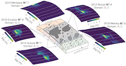
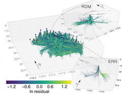
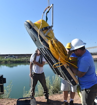
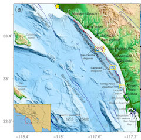

Research
Some Past and Present Projects
Site Characterization
Improving our understanding of how characteristics of the near-surface affect ground-motions using the parameter kappa.
Ground-Motions of Tsunami Earthquakes
This work uses ground-motion models in conjunction with near-field seismic and GPS data to study the rupture of tsunami earthquakes.
Crustal Properties and Ground-Motions
How do crustal properties affect shaking, and how can we include that in ground-motion models to reduce uncertainty in seismic hazard? This includes empirical work, as well as numerical simulations.
Faulting in Southern California
Using traditional marine imaging methods to determine where deformation is happening near the Imperial Fault.
Offshore Hazards
Learning about seismic hazard and offshore faults in Southern California with marine active-source imaging data.
Publications
PDFs linked if published.
- T. Nye, V.J. Sahakian, E.King, A.S. Baltay., A.R. Klimasewski (in review). Estimates of κ0 and effects on ground motions in the San Francisco Bay Area, Bull. Seis. Soc. of Am.
- V.J. Sahakian, B.J. Derosier, T.K. Rockwell, J.M. Stock (2022). Shallow Distributed Faulting in the Imperial Valley, Geology, doi:0.1130/G49572.1
- D. Melgar, V.J. Sahakian, A.M. Thomas (2022). Deep Coseismic Slip in the Cascadia Megathrust can be Consistent with Coastal Subsidence, Geophys. Res. Let., 49, e2021GL097404, doi:10.1029/2021GL097404
- E.A. Wirth, V.J. Sahakian, L.M. Wallace, D. Melnick (2022). The occurrence and hazards of great subduction zone earthquakes, Nat. Rev. Earth Environ., doi:10.1038/s43017-021-00245-w
- G.E. Goldberg, D. Melgar, G.P. Hayes, B.W. Crowell, V.J. Sahakian (2021). A Ground-Motion Model for GNSS Peak Ground Displacement, Bull. Seis. Soc. of Am., 111(5), 2393-2407, doi:10.1785/0120210042
- J. Mayer, V.J. Sahakian, E. Hooft, D. Toomey, R. Durairajan (2021). On the Resilience of Internet Infrastructures in the Pacific Northwest to Earthquakes Passive and Active Measurement Conference 2021,44, doi:10.1785/0120200200
- A.R. Klimasewski, V.J. Sahakian, A.M. Thomas (2021). Comparing performance of artificial neural networks with traditional ground-motion models for small-magnitude earthquakes in Southern California Bull. Seis. Soc. of Am., 111(3), 1577-1589, doi:10.1785/0120200200
- M.A.L. Walton, L.Staisch, T. Dura, J.K. Pearl, B. Sherrod, J. Gomberg, S. Engelhart, A. Tréhu, J. Watt, J. Perkins, R. Witter, N. Bartlow, C. Goldfinger, H. Kelsey, A. Morey, V.J. Sahakian, H. Tobin, K. Wang, R. Wells, E. Wirth (2021). Toward an integrative geological and geophysical view of Cascadia subduction zone earthquakes, Annual Review of Earth and Planetary Sciences, doi:10.1146/annurev-earth-071620-065605.
- D.E. Goldberg, D. Melgar, V.J. Sahakian, A.M. Thomas, X. Xu, B.W. Crowell, J. Geng, (2020) Complex Rupture of an Immature Fault Zone: A Simultaneous Kinematic Model of the 2019 Ridgecrest, CA Earthquakes, 47(3), Geophys. Res. Let., doi:10.1029/2019GL086382
- V. J. Sahakian, D. Melgar, M. Muzli (2019). Weak Near-Field Behavior of a Tsunami Earthquake, Geophys. Res. Let., doi:10/1029/2019GL083989
- A.R. Klimasewski, V.J. Sahakian, A.Baltay, J. Boatwright, J.B. Fletcher, L.M. Baker (2019). Full site spectra in Southern California from direct Brune-constrained inversion, Bull. Seis. Soc. of Am., 109(\textbf{5}), 1878-1889, doi:10.1785/0120190037
- V. J. Sahakian, A. Baltay, T. Hanks, J. S. Buehler, F.L. Vernon, D. Kilb., N. Abrahamson (2019). Ground-Motion Residuals, Path Effects, and Crustal Properties: A Pilot Study in Southern California, J. Geophys. Res., Solid Earth, doi: 10.1029/2018JB016796
- V. J. Sahakian, D. Melgar, L. Quíntanar, L. Ramírez-Guzman, X. Pérez-Campos, A. Baltay (2018). Ground Motions from the September 7th and 19th 2017 Tehuantepec and Puebla-Morelos, Mexico Earthquakes, Bull. of the Seis. Soc. of Am., 108(6), 3300-3312, doi: 10.1785/0120180108
- M. Çelebi, V. J. Sahakian, D. Melgar, L. Quíntanar (2018). The M7.1 September 19, 2017 Puebla-Mexico City Earthquake: Spectral Ratios Confirm Mexico City Zoning, Bull. of the Seis. Soc. of Am., 108(6), 3289-3299, doi:10.1785/0120180100
- V. Sahakian , A. Baltay, T.H. Hanks, J.S. Buehler, F.L. Vernon, D. Kilb, N. Abrahamson (2018) Decomposing Leftovers: Event, Path, and Site Residuals from an ANZA-Region Small-Magnitude GMPE, Bull. Seis. Soc. Am., 108(5A), 2478-2492, doi:10.1785/0120170376
- V. Sahakian, J. Bormann, N. Driscoll, A. Harding, G. Kent, S. Wesnousky (2017). Seismic Constraints on the Architecture of the Newport Inglewood Rose Canyon Fault: Implications for the Length and Magnitude of Future Earthquake Ruptures, J. Geophys. Res. Solid Earth, 122, doi:10.1002/2016JB013467
- V. Sahakian, A. Kell, A. Harding, N. Driscoll, G. Kent (2016). Geophysical evidence for a San Andreas subparallel transtensional fault along the north eastern shore of the Salton Sea, Bull. Seis. Soc. Am., 106(5), doi:10.1785/0120150350}.
- E. Lindsey, V. J. Sahakian, Y. Fialko, Y. Bock, S. Barbot, T. Rockwell (2014). Interseismic strain localization in the San Jacinto fault zone, Pure Appl. Geophys. doi:10.1007/s00024-013-0753-z.
Opportunities
I am often looking for students or postdocs to join the lab - contact me!
If you are a UO undergrad interested in working with me for an independent study, send me an email and let's talk! If you are a prospective graduate student or postdoc, I'd love to hear from you - please send me an email with your CV, and research topics or ideas you are interested in working on.
Prospective grads can find more information about the application process here.
*Please Note: I am likely not accepting new graduate students for next year (2020-2021, applications due 2019).
Why Oregon?
Eugene, Oregon is a beautiful place to work and live. The University is less than an hour east of the coast with great surfing, and less than an hour west of the Cascades (easy access to skiing in the winter!). There are trails outside our front door. The University of Oregon Earth Sciences Department is growing in seismology and Geophysics . We have well-attended weekly volcanology and seismology seminars in addition to the departmental seminar, and the size and diversity of our department provides lots of opportunities for interaction, as well as studying hazards in your backyard.
Gallery
- All
- Data Collection
- In The Field
- Science
- Misc

{kind=link}
{kind=link}
{kind=link}
{kind=link}
{kind=link}
{kind=link}
{kind=link}